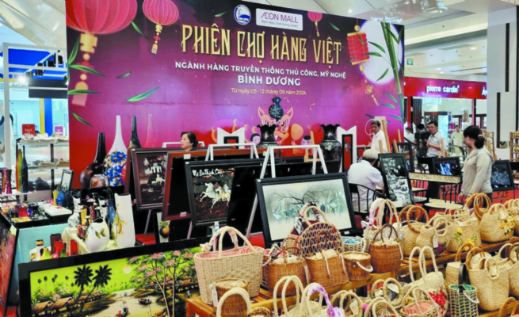

Industry and Trade Sector Flexible, Determined to Make Breakthroughs
2024 was considered an important milestone of Binh Duong foreign trade when the trade surplus was estimated at US$10 billion. In addition, industrial production expanded quite well, driven by the optimistic recovery of key industries. This success was certainly contributed by the Department of Industry and Trade with consistent and flexible policies.
Spectacularly overcoming hardships to make a success
In 2024, the world landscape continued to develop complicatedly and unpredictably, prone to many risks and instabilities. In that context, the Department of Industry and Trade of Binh Duong province actively and consistently adopted many solutions to remove obstacles faced by businesses, launched many trade promotion events, expanded markets and enhanced the effectiveness of administrative procedure reform. Therefore, the sector spectacularly overcame all difficulties in the way, enabling Binh Duong’s export value to account for more than 10% of the country’s total export value and affirming its position as one of the leading exporters in Vietnam.
Specifically, the industrial value expanded quite well compared with the previous year, driving the optimistic and steady revival of key industries. The processing and manufacturing sector continued to play a key role in economic growth, trade and export. The industrial structure shifted positively, with a gradual reduction of extractive industries and from labor-intensive industries and a higher share of high-tech industries. The Index of Industrial Production (IIP) was estimated to grow 7.6% year on year. Commercial electricity output was projected at 16.94 billion kWh, up 11.4% while electricity savings rose 10.8% to 406.2 million kWh in the year. Total retail revenue of goods and services was forecast at VND351,640 billion, up 13.3%. Import and export activities expanded, with most key imports and exports growing higher. The province also effectively launched the market stabilization program; and regularly organized meetings with related associations and businesses to promptly resolve existing matters of concerns. At the same time, the 7th voting of outstanding rural industrial products of Binh Duong province in 2024 was conducted with 41 products certified to meet the provincial level and 17 products recognized to reach the regional level. Administration was effective, including industrial cluster management, energy - safety engineering management, chemical safety management, petroleum and LPG management, and environmental management in the industry and trade sector.
The 2024 Trade Promotion Program produced many anticipated outcomes. The province opened six Vietnamese goods market fairs with a total budget of VND350 million and launched a domestic trade promotion program with a total budget of VND1.92 billion. The industrial promotion program carried out 14 plans and projects with a total budget of more than VND2.79 billion.
The Department of Industry and Trade also counselled the Provincial People's Committee to adopt the Action Plan for Program 111-CTr/TU on implementation of Resolution 29-NQ/TW (13th term) on continued national industrialization and modernization promotion to 2030, with a vision to 2045.
Besides, the industry and trade sector launched the Digital Transformation Plan in 2024, the Plan for implementation of Directive 04/CT-TTg on continued implementation of the Project on development of population data, identification and electronic authentication application for the national digital transformation in 2022-2025, with a vision to 2030 of the Department of Industry and Trade in 2024 and the following years. It also hosted a conference to raise awareness of digital transformation for trade and industrial businesses. Accordingly, it gradually improved the quality of providing online public services, increased the rate of digitizing records, raised the rate of timely record settlement to over 99% and maintained a stable rate of 100% digitized records.
Key tasks in 2025
Based on its achievements in 2024 and the tasks and solutions stated in the resolution of the 11th Provincial Party Congress (2020-2025 term), the Department of Industry and Trade will focus on accomplishing its key tasks in 2025: IIP growth of 9.7%, total retail revenue growth of consumer goods and services of 13-14%, export growth of 9-10%, import growth of 9-10% and 99.99% of households with access to electricity.
At the same time, the department will build programs, plans, projects and legal documents related to the sector. It will support small and medium-sized enterprises (SMEs) to adopt digital transformation and join e-commerce platforms; effectively carry out industrial promotion, energy saving and cleaner production projects; further accelerate administrative reform, management computerization and digital transformation in the industry and trade sector to innovate working methods and manner of public employees.
“Binh Duong is one of the localities to have the most industrial parks in the country, with more than 30 in operation. Logistics demand is increasing thanks to the robust development of manufacturing, import and export. Therefore, the province has gradually asserted its role as an important logistics center of the region, supported economic and industrial development and promoted global integration. The province's goals also prove its determination to maintain its position as one of the most vibrant international trade hubs in the country. Combining strategies on industry, trade, logistics and state management will help the province achieve its goals while creating a solid foundation for sustainable economic development in the following years," said Mr. Ha Van Ut, Director of the Department of Industry and Trade, Binh Duong province.